There are four basic types of controls with different purposes.
You should use the controls only for the purpose shown in the table. For example, users expect radio buttons for selecting an option. Do not use a radio button also to invoke an action, such as opening a window or printing. Use a command button for that.
There are, however, several exceptions: user objects can be created for any purpose, and ListBoxes, ListViews, TreeViews, and Tabs are often used both to display data and to invoke actions. For example, double-clicking a ListBox item often causes some action to occur.
The following sections describe some features that are unique to individual controls. The controls are listed in the order in which they display on the Insert>Control menu and the drop-down controls palette:
Some controls are not covered in this chapter:
CommandButtons are used to carry out actions. For example, you can use an OK button to confirm a deletion or a Cancel button to cancel a requested deletion. If there are many related CommandButtons, place them along the right side of the window; otherwise, place them along the bottom of the window.
You cannot change the color or alignment of text in a CommandButton.
If clicking the button opens a window that requires user interaction before any other action takes place, use ellipsis points in the button text; for example, "Print...".
You can specify that a CommandButton is the default button in a window by selecting Default in the General property page in the button's Properties view.
When there is a default CommandButton and the user presses the Enter key:
 Other controls affect default behavior If the window does not contain an editable field, use the SetFocus function
or the tab order setting to make sure the default button behaves
as described above.
Other controls affect default behavior If the window does not contain an editable field, use the SetFocus function
or the tab order setting to make sure the default button behaves
as described above.
A bold border is placed around the default CommandButton (or the button with focus if the user explicitly tabs to a CommandButton).
You can define a CommandButton as being the cancel button by selecting Cancel in the General property page in the button's Properties view. If you define a cancel CommandButton, the cancel button's Clicked event is triggered when the user presses the Esc key.
PictureButtons are identical to CommandButtons in their functionality. The only difference is that you can specify a picture to display on the button. The picture can be a bitmap (BMP) file, a run-length encoded (RLE) file, an Aldus-style Windows metafile (WMF), a GIF file, an animated GIF file, or a JPEG file.
You can choose to display one picture if the button is enabled and a different picture if the button is disabled.
Use these controls when you want to be able to represent the purpose of a button by using a picture instead of text.
 To specify a picture:
To specify a picture:
Select the PictureButton to display its properties in the Properties view.
On the General tab page, enter the name of the image file you want to display when the button is enabled, or use the Browse button and choose a file.
Enter the name of the image file you want to display when the button is disabled, or use the Browse Disabled button and choose a file.
If the PictureButton is defined as initially enabled, the enabled picture displays in the Layout view. If the PictureButton is defined as initially disabled, the disabled picture displays in the Layout view.
 To specify button text alignment:
To specify button text alignment:
Select the PictureButton to display its properties in the Properties view.
On the General tab page, enter the text for the PictureButton in the Text box.
Use the HTextAlign and VTextAlign lists to choose how you want to display the button text.
CheckBoxes are square boxes used to set independent options. When they are selected, they contain a check mark; when they are not selected, they are empty.
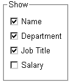
CheckBoxes are independent of each other. You can group them in a GroupBox or rectangle to make the window easier to understand and use, but that does not affect the CheckBoxes' behavior; they are still independent.
CheckBoxes usually have two states: on and off. But sometimes you need to represent a third state, such as Unknown. The third state displays as a grayed box with a check mark.
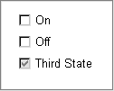
 To enable the third state:
To enable the third state:
Select the ThreeState property in the General page of the CheckBox Properties view.
 To specify that a CheckBox's current
state is the third state:
To specify that a CheckBox's current
state is the third state:
Select the ThreeState and the ThirdState properties in the General page of the CheckBox Properties view.
RadioButtons are round buttons that represent mutually exclusive options. They always exist in groups. Exactly one RadioButton is selected in each group.
When a RadioButton is selected, it has a dark center; when it is not selected, the center is blank.
In the following example, the text can be either plain, bold, or italic (plain is selected):
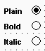
When the user clicks a RadioButton, it becomes selected and the previously selected RadioButton in the group becomes deselected.
Use RadioButtons to represent the state of an option. Do not use them to invoke actions.
When a window opens, one RadioButton in a group must be selected. You specify which is the initially selected RadioButton by selecting the Checked property in the General property page in the RadioButton's Properties view.
By default, all RadioButtons in a window are in one group, no matter what their location in the window. Only one RadioButton can be selected at a time.
You use a GroupBox control to group related RadioButtons. All RadioButtons inside a GroupBox are considered to be in one group. One button can be selected in each group.
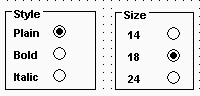
When a window contains several RadioButtons that are outside of a GroupBox, the window acts as a GroupBox. Only one RadioButton can be active at a time unless the check box for the Automatic property on the RadioButton's General property page is cleared. When the Automatic property is not set, you must use scripts to control when a button is selected. Multiple RadioButtons can be selected outside of a group.
The Automatic property does not change how RadioButtons are processed inside a GroupBox.
You use a StaticText control to display text to the user or to describe a control that does not have text associated with it, such as a list box or edit control.
The user cannot change the text, but you can change the text for a StaticText control in a script by assigning a string to the control's Text property.
StaticText controls have events associated with them, but you will probably seldom write scripts for them because users do not expect to interact with static text.
One use of a StaticText control is to label a list box or edit control. If you assign an accelerator key to a list box or edit control, you need to indicate the accelerator key in the text that labels the control. Otherwise, the user would have no way of knowing that an accelerator key is defined for the control. This technique is described in "Defining accelerator keys ".
You can select a border style using the BorderStyle property on the General property page.
 Selecting the Border property The BorderStyle property will affect only the StaticText control
if the Border property check box is selected.
Selecting the Border property The BorderStyle property will affect only the StaticText control
if the Border property check box is selected.
A StaticHyperLink is display text that provides a hot link to a specified Web page. When a user clicks the StaticHyperLink in a window, the user's Web browser opens to display the page.
The StaticHyperLink control has a URL property that specifies the target of the link. You specify the text and URL on the StaticHyperLink control's General tab page in the Properties view.
If you know that your users have browsers that support URL completion, you can enter a partial address—for example, sybase.com instead of the complete address, http://www.sybase.com.
When the StaticHyperLink control is in an MDI Frame window with MicroHelp, the URL you specify displays in the status bar when the user's pointer is over the control.
A hand is the default pointer and blue underlined text is the default font. To change the pointer, use the Other property page. To change the font, use the Font property page.
Pictures are PowerBuilder-specific controls that display a bitmap (BMP) file, a run-length encoded (.RLE) file, an Aldus-style Windows metafile (WMF), a GIF file, an animated GIF file, or a JPEG file.
 To display a picture:
To display a picture:
Place a picture control in the window.
In the General tab page in the Properties view, enter in the PictureName text box the name of the file you want to display, or browse to select a file.
The picture displays.
You can choose to resize or invert the image.
If you try to insert a very large image into a picture control, the image may fail to display. The maximum size that will display depends on the version of Windows, the graphics card and driver, and the available memory. Compressed files must be decompressed to display. Failure to display is most likely to occur with JPEG files because the JPEG standard supports very high compression and the decompressed content may be many times larger than the size of the JPEG file.
Be careful about how you use picture controls. They can serve almost any purpose. They have events, so users can click on them, but you can also use them simply to display images. Be consistent in their use so users know what they can do with them.
A PictureHyperLink is a picture that provides a hot link to a specified Web page. When a user clicks the PictureHyperLink in a window, the user's Web browser opens to display the page.
The PictureHyperLink control has a URL property that specifies the target of the link. You specify the picture and URL in the PictureHyperLink control's Properties view in the General tab page. If you know that your users have browsers that support URL completion, you can enter a partial address—for example, sybase.com—instead of the complete address, http://www.sybase.com.
When the PictureHyperLink control is in an MDI Frame window with MicroHelp, the URL you specify appears in the status bar when the user's pointer is over the control.
A hand is the default pointer. To change the pointer, use the Other property page.
The PictureHyperLink control is a descendant of the Picture control. Like a Picture control, a PictureHyperLink control can display a bitmap (BMP) file, a run-length encoded (RLE) file, an Aldus-style Windows metafile (WMF), a GIF file, an animated GIF file, or a JPEG file.
You display a picture in a PictureHyperLink control in the same way you display a picture in a picture control. For more information, see "Picture".
You use a GroupBox to group a set of related controls. When a user tabs from another control to a GroupBox, or selects a GroupBox, the first control in the GroupBox gets focus. To tab between controls in a GroupBox, set the tab value of the GroupBox to 0 and assign a tab value to each control within it.
All RadioButtons in a GroupBox are considered to be in a group. For more information about using RadioButtons in GroupBoxes, see "RadioButton".
PowerBuilder provides the following drawing controls: Line, Oval, Rectangle, and RoundRectangle. Drawing controls are usually used only to enhance the appearance of a window or to group controls. However, constructor and destructor events are available, and you can define your own unmapped events for a drawing control. A drawing control does not receive Windows messages, so a mapped event would not be useful.
You can use the following functions to manipulate drawing controls at runtime:
In addition, each drawing control has a set of properties that define its appearance. You can assign values to the properties in a script to change the appearance of a drawing control.
 Never in front You cannot place a drawing control on top of another control
that is not a drawing control, such as a GroupBox. Drawing controls always appear
behind other controls whether or not the Bring to Front or Send
to Back items on the pop-up menu are set. However, drawing controls
can be on top of or behind other drawing controls.
Never in front You cannot place a drawing control on top of another control
that is not a drawing control, such as a GroupBox. Drawing controls always appear
behind other controls whether or not the Bring to Front or Send
to Back items on the pop-up menu are set. However, drawing controls
can be on top of or behind other drawing controls.
A SingleLineEdit is a box in which users can enter a single line of text. A MultiLineEdit is a box in which users can enter more than one line of text.
SingleLineEdits and MultiLineEdits are typically used for input and output of data.
For these controls, you can specify many properties, including:
For more information about properties of these controls, right-click in any tab page in the Properties view and select Help from the pop-up menu.
Sometimes users need to enter data that has a fixed format. For example, U.S. and Canadian phone numbers have a three-digit area code, followed by three digits, followed by four digits. You can use an EditMask control that specifies that format to make it easier for users to enter values. Think of an EditMask control as a smart SingleLineEdit: it knows the format of the data that can be entered.
An edit mask consists of special characters that determine what can be entered in the box. An edit mask can also contain punctuation characters to aid the user.
For example, to make it easier for users to enter phone numbers in the proper format, you can specify the following mask, where # indicates a number:
(###) ###-####
At runtime, the punctuation characters (the parentheses and dash) display in the box and the cursor jumps over them as the user types.
Masks in EditMask controls in windows work in a similar way to masks in display formats and in the EditMask edit style in DataWindow objects. For more information about specifying masks, see the discussion of display formats in Chapter 22, "Displaying and Validating Data ."
 Edit mask character for Arabic and Hebrew The b mask character allows the entry of Arabic characters
when you run PowerBuilder on an Arabic-enabled version of Windows
and Hebrew characters when running on a Hebrew-enabled version.
It has no effect on other operating systems.
Edit mask character for Arabic and Hebrew The b mask character allows the entry of Arabic characters
when you run PowerBuilder on an Arabic-enabled version of Windows
and Hebrew characters when running on a Hebrew-enabled version.
It has no effect on other operating systems.
 To use an EditMask control:
To use an EditMask control:
Select the EditMask to display its properties in the Properties view.
Name the control on the General property page.
Select the Mask tab.
In the MaskDataType drop-down list, specify the type of data that users will enter into the control.
In the Mask edit box, type the mask.
You can click the button on the right and select masks. The masks have the special characters used for the specified data type.
Specify other properties for the EditMask control.
For information on the other properties, right-click in any tab page in the Properties view and select Help from the pop-up menu.
 Control size and text entry The size of the EditMask control affects its behavior. If
the control is too small for the specified font size, users might
not be able to enter text.
Control size and text entry The size of the EditMask control affects its behavior. If
the control is too small for the specified font size, users might
not be able to enter text.
The EditMask control checks the validity of a date when you enter it, but if you change a date so that it is no longer valid, its validity is not checked when you tab away from the control. For example, if you enter the date 12/31/2005 in an EditMask control with the mask mm/dd/yyyy, you can delete the 1 in 12, so that the date becomes 02/31/2005. To catch problems like this, add validation code to the LoseFocus event for the control.
Some keystrokes have special behavior in EditMask controls. For more information, see "The EditMask edit style".
You can use a drop-down calendar that is similar to the DatePicker control in EditMask controls that have a Date or DateTime edit mask. The user can choose to edit the date in the control or to select a date from a drop-down calendar.
To specify that an EditMask control uses a drop-down calendar to display and set dates, select the Drop-down Calendar check box on the Mask page in the Properties view. You can set display properties for the calendar on the Calendar page. Users navigate and select dates within the calendar as they do in the calendar in a DatePicker control.
You can define an EditMask as a spin control, which is an edit control that contains up and down arrows that users can click to cycle through fixed values. For example, assume you want to allow your users to select how many copies of a report to print. You could define an EditMask as a spin control that allows users to select from a range of values.
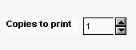
 To define an EditMask as a spin control:
To define an EditMask as a spin control:
Name the EditMask and provide the data type and mask, as described above.
Select the Spin check box on the Mask property page.
Specify the needed information.
For example, to allow users to select a number from 1 to 20 in increments of 1, specify a spin range of 1 to 20 and a spin increment of 1.
For more information on the options for spin controls, right-click in any tab page in the Properties view and select Help from the pop-up menu.
You can place freestanding scroll bar controls within a window. Typically, you use these controls to do one of the following:
You can set the position of the scroll box by specifying the value for the control's Position property. When the user drags the scroll box, the value of Position is automatically updated.
HTrackBars and VTrackBars are bars with sliders that move in discrete increments. Like a scroll bar, you typically use a track bar as a slider control that allows users to specify a value or see a value you have displayed graphically, but on a discrete scale rather than a continuous scale. Clicking on the slider moves it in discrete increments instead of continuously.
Typically a horizontal trackbar has a series of tick marks along the bottom of the channel and a vertical trackbar has tick marks on the right.
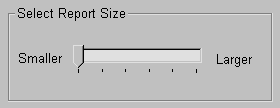
Use a trackbar when you want the user to select a discrete value. For example, you might use a trackbar to enable a user to select a timer interval or the size of a window.
You can set properties such as minimum and maximum values, the frequency of tick marks, and the location where tick marks display.
You can highlight a range of values in the trackbar with the SelectionRange function. The range you select is indicated by a black fill in the channel and an arrow at each end of the range. This is useful if you want to indicate a range of preferred values. In a scheduling application, the selection range could indicate a block of time that is unavailable. Setting a selection range does not prevent the user from selecting a value either inside or outside the range.
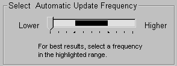
You can see an example of a window with a trackbar in the PowerBuilder Code Examples sample application in the Examples subdirectory in your PowerBuilder directory. See the w_trackbars window in PBEXAMW3.PBL.
HProgressBars and VProgressBars are rectangles that indicate the progress of a lengthy operation, such as an installation program that copies a large number of files. The progress bar gradually fills with the system highlight color as the operation progresses.
You can set the range and current position of the progress bar in the Properties view using the MinPosition, MaxPosition, and Position properties. To specify the size of each increment, set the SetStep property.
You can see an example of a window with a progress bar in the PowerBuilder Code Examples sample application in the Examples subdirectory in your PowerBuilder directory. See the w_progressbars window in PBEXAMW3.PBL.
DropDownListBoxes combine the features of a SingleLineEdit and a ListBox.
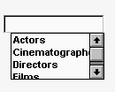
There are two types of DropDownListBoxes:
If you want your user to choose only from a fixed set of choices, make the DropDownListBox noneditable.
In these boxes, the only valid values are those in the list.
There are several ways for users to pick an item from a noneditable DropDownListBox:
If you want to give users the option of specifying a value that is not in the list, make the DropDownListBox editable by selecting the AllowEdit check box on the General tab page.
With editable DropDownListBoxes, you can choose to have the list always display or not. For the latter type, the user can display the list by clicking the down arrow.
You specify the list in a DropDownListBox the same way as for a ListBox. For information, see "ListBox".
To indicate the size of the box that drops down, size the control in the Window painter using the mouse. When the control is selected in the painter, the full size—including the drop-down box—is shown.
As with ListBoxes, you can specify whether the list is sorted and whether the edit control is scrollable.
For more information, right-click in any tab page in the Properties view and select Help from the pop-up menu.
DropDownPictureListBoxes are similar to DropDownListBoxes in the way they present information. They differ in that DropDownListBoxes use only text to present information, whereas DropDownPictureListBoxes add images to the information.
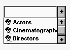
Everything that you can do with DropDownListBoxes you can do with DropDownPictureListBoxes. For more information, see "DropDownListBox".
You can choose from a group of stock images provided by PowerBuilder, or use any bitmap (BMP) file, icon (ICO) file, GIF file, or JPEG file when you add images to a DropDownPictureListBox. You use the same technique that you use to add pictures to a PictureListBox. For more information, see "Adding images to a PictureListBox".
A ListBox displays available choices. You can specify that ListBoxes have scroll bars if more choices exist than can be displayed in the ListBox at one time.
ListBoxes are an exception to the rule that a control should either invoke an action or be used for viewing and entering data. ListBoxes can do both. ListBoxes display data, but can also invoke actions. Typically in Windows applications, clicking an item in the ListBox selects the item. Double-clicking an item acts upon the item.
For example, in the PowerBuilder Open dialog box, clicking an object name in a ListBox selects the object. Double-clicking a name opens the object's painter.
PowerBuilder automatically selects (highlights) an item when a user selects it at runtime. If you want something to happen when users double-click an item, you must code a script for the control's DoubleClicked event. The Clicked event is always triggered before the DoubleClicked event.
To add items to a ListBox, select the ListBox to display its properties in the Properties view, select the Items tab, and enter the values for the list. Press tab to go to the next line.
In the Items tab page, you can work with rows in this way:
 Changing the list at runtime To change the items in the list at runtime, use the functions AddItem, DeleteItem,
and InsertItem.
Changing the list at runtime To change the items in the list at runtime, use the functions AddItem, DeleteItem,
and InsertItem.
You can set tab stops for text in ListBoxes (and in MultiLineEdits) by setting the TabStop property on the General property page. You can define up to 16 tab stops. The default is a tab stop every eight characters.
You can also define tab stops in a script. Here is an example that defines two tab stops and populates a ListBox:
// lb_1 is the name of the ListBox.
string f1, f2, f3
f1 = "1"
f2 = "Emily"
f3 = "Foulkes"
// Define 1st tab stop at character 5.
lb_1.tabstop[1] = 5
// Define 2nd tab stop 10 characters after the 1st.
lb_1.tabstop[2] = 10
// Add an item, separated by tabs.
// Note that the ~t must have a space on either side
// and must be lowercase.
lb_1.AddItem(f1 + " ~t " + f2 + " ~t " + f3)
Note that this script will not work if it is in the window's Open event, because the controls have not yet been created. The best way to specify this is in a user event that is posted in the window's Open event using the PostEvent function.
For ListBoxes, you can specify whether:
For more information, right-click in any tab page in the Properties view for a ListBox and select Help from the pop-up menu.
A PictureListBox, like a ListBox, displays available choices in both text and images. You can specify that PictureListBoxes have scroll bars if more choices exist than can be displayed in the PictureListBox at one time.
You can choose from a group of stock images provided by PowerBuilder, or use any bitmap (BMP) file, icon (ICO) file, GIF file, or JPEG file when you add images to a PictureListBox.
Keep in mind, however, that the images should add meaning to the list of choices. If you use a large number of images in a list, they become meaningless.
You could, for example, use images in a long list of employees to show the department to which each employee belongs, so you might have a list with 20 or 30 employees, each associated with one of five images.
 To add an image to a PictureListBox:
To add an image to a PictureListBox:
Select the PictureListBox control to display its properties in the Properties view, and then select the Pictures tab.
The Pictures property page displays.
Use the PictureName drop-down ListBox to select stock pictures to add to the PictureListBox
or
Use the Browse button to select a bitmap (BMP) file, icon (ICO) file, GIF file, or JPEG file to include in the PictureListBox.
 About cursor files To use a cursor file, you must type the file name. You cannot
select it.
About cursor files To use a cursor file, you must type the file name. You cannot
select it.
Specify a picture mask color (the color that will be transparent for the picture).
Specify the height and width for the image in pixels or accept the defaults.
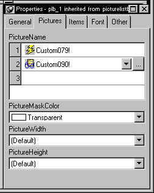
Repeat the procedure for the number of images you plan to use in your PictureListBox.
Select the Items tab and change the Picture Index for each item to the appropriate number.
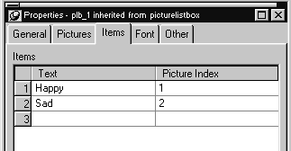
Click OK.
On the Items tab page, you can work with rows in this way:
On the Pictures tab page, you can work with rows in the same way, and also:
| To | Do this |
|---|---|
| Browse for a picture | Select the row and click the Browse button or press F2 |
For information about other properties, right-click in any tab page in the Properties view and select Help from the pop-up menu.
A ListView control lets you display items and icons in a variety of arrangements. You can display large or small icons in free-form lists. You can add columns, pictures, and items to the ListView, and modify column properties, using PowerScript functions such as AddColumn, AddLargePicture, SetItem, SetColumn, and so on. For information about ListView functions, see the online Help.
The following illustration from the Code Examples application shows a ListView control used in a sales order application.
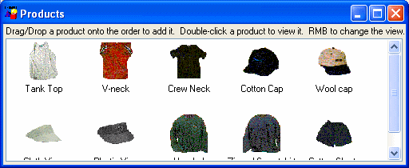
Adding images to a ListView control is the same as adding images to a PictureListBox. The ListView control's Properties view has two tab pages for adding pictures: Large Picture (default size 32 by 32 pixels) and Small Picture (16 by 16 pixels).
For more information, see "Adding images to a PictureListBox".
 To add ListView items:
To add ListView items:
Select the ListView control to display its properties in the Properties view and then select the Items tab.
Enter the name of the ListView item and the picture index you want to associate with it. This picture index corresponds to the images you select on the Large Picture, Small Picture, and State property pages.
On the Items tab page, you can work with rows in this way:
 Setting the picture index for the first item to zero
clears all the settings on the tab page.
Setting the picture index for the first item to zero
clears all the settings on the tab page.
Set properties for the item on the Large Picture, Small Picture, and/or State tab pages as you did on the Items tab page.
On these pages, you can also browse for a picture. To do so, click the browse button or press F2.
Repeat until all the items are added to the ListView.
You can display a ListView in four styles:
 To select a ListView style:
To select a ListView style:
Select the ListView control to display its properties in the Properties view and then select the General tab.
Select the type of view you want from the View drop-down list.
For more information about other properties, right-click in any tab page in the Properties view and select Help from the pop-up menu.
You can set other ListView properties.
 To specify other ListView properties:
To specify other ListView properties:
Select the ListView control to display its properties in the Properties view.
Choose the tab appropriate to the property you want to specify:
For more information on the ListView control, see Application Techniques . For information about its properties, see Objects and Controls .
You can use TreeView controls in your application to represent relationships among hierarchical data. An example of a TreeView implementation is PowerBuilder's Browser. The tab pages in the Browser contain TreeView controls.

A TreeView consists of TreeView items that are associated with one or more pictures. You add images to a TreeView in the same way that you add images to a PictureListBox.
For more information, see "Adding images to a PictureListBox".
 Dynamically changing image size The image size can be changed at runtime by setting the PictureHeight
and PictureWidth properties when you create a TreeView.
Dynamically changing image size The image size can be changed at runtime by setting the PictureHeight
and PictureWidth properties when you create a TreeView.
 To add items to a TreeView:
To add items to a TreeView:
Write a script in the TreeView constructor event to create TreeView items.
For more information about populating a TreeView, see Application Techniques and Objects and Controls.
A state picture is an image that appears to the left of the TreeView item indicating that the item is not in its normal mode. A state picture could indicate that a TreeView item is being changed, or that it is performing a process and is unavailable for action.
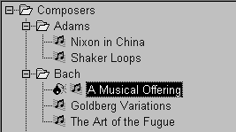
 To specify a state picture for a TreeView item:
To specify a state picture for a TreeView item:
Select the TreeView control to display its properties in the Properties view and then select the State tab.
 To specify a cursor file To use a cursor file, you must type the file name. You cannot
select it.
To specify a cursor file To use a cursor file, you must type the file name. You cannot
select it.
Working in the Properties view with the rows in the State or Pictures tab page is the same as working with them in a ListView control. For information, see "ListView".
 To activate a state picture for a TreeView item:
To activate a state picture for a TreeView item:
Write a script that changes the image when appropriate.
For example, the following script gets the current TreeView item and displays the state picture for it.
long ll_tvi
treeviewitem tvi
ll_tvi = tv_foo.finditem(currenttreeitem! , 0)
tv_foo.getitem(ll_tvi , tvi)
tvi.statepictureindex = 1
tv_foo.setitem(ll_tvi, tvi)
For more information on the TreeView control, see Application Techniques .
 To specify other TreeView properties:
To specify other TreeView properties:
Select the TreeView control to display its properties in the Properties view and then select the General tab.
Enter a name for the TreeView in the Name text box and specify other properties as appropriate. Among the properties you can specify on the General property page are:
For more information, right-click in any tab page in the Properties view and select Help from the pop-up menu.
For other options, choose the tab appropriate to the property you want to specify:
For more information on the TreeView control, see Application Techniques . For information about its properties, see Objects and Controls .
A Tab control is a container for tab pages that display other controls. You can add a Tab control to a window in your application to present information that can logically be grouped together but may also be divided into distinct categories. An example is the use of tab pages in the Properties view for objects in PowerBuilder. Each tab page has a tab that displays the label for the tab page and is always visible, whichever tab page is selected.
When you add a Tab control to a window, PowerBuilder creates a Tab control with one tab page labeled "none". The control is rectangular.
You may find that you select the control when you want to select the page and vice versa. This Tab control has three tab pages. The TabPosition setting is tabsontopandbottom!, so that the tab for the selected tab page and pages that precede it in the tab order display at the top of the Tab control.
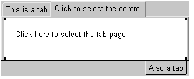
To select the Tab control, click any of the tabs where the label displays, or in the area adjacent to the tabs, shown in gray here.
To select a tab page, click its tab and then click anywhere on the tab page except the tab itself. The handles at the corners of the white area indicate that the tab page is selected, not the Tab control.
To add a new Tab control to a window, select Insert>Control>Tab and click in the window. The control has one tab page when it is created. Use the following procedure to add additional tab pages to the tab control.
 To create a new tab page within a Tab control:
To create a new tab page within a Tab control:
Select the Tab control by clicking on the tab of the tab page or in the area to its right.
The handles that indicate that the Tab control is selected display at the corners of the Tab control. If you selected the tab page, the handles display at the corners of the area under the tab.
Choose Insert TabPage from the pop-up menu.
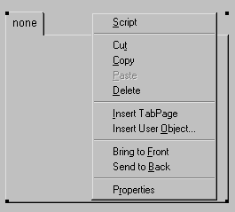
Add controls to the new tab page.
You can create reusable tab pages in the User Object painter by defining a tab page with controls on it that is independent of a Tab control. Then you can add that tab page to one or more Tab controls.
 To define a tab page that is independent of a
Tab control:
To define a tab page that is independent of a
Tab control:
Click the New button on the PowerBar and use the Custom Visual icon on the Object tab page to create a custom visual user object.
Size the user object to match the size of the Tab controls in which you will use it.
Add the controls that you want to have appear on the tab page to the user object.
Select the user object (not one of the controls you added) and specify the information to be used by the tab page on the TabPage page in the Properties view:
Save and close the user object.
Once you have created a user object that can be used as a tab page, you can add it to a Tab control. You cannot add the user object to a Tab control if the user object is open, and, after you have added the user object to the control, you cannot open the user object and the window that contains the Tab control at the same time.
 To add a tab page that
exists as an independent user object to a Tab control:
To add a tab page that
exists as an independent user object to a Tab control:
In the Window painter, right-click the Tab control.
Choose Insert User Object from the pop-up menu.
Select a user object that you have set up as a tab page and click OK.
A tab page, inherited from the user object you selected, is inserted. You can select the tab page, set its tab page properties, and write scripts for the inherited user object just as you do for tab pages defined within the Tab control, but you cannot edit the content of the user object within the Tab control. If you want to edit the controls, close the Window painter and go back to the User Object painter to make changes.
 To change the name and properties of the Tab control:
To change the name and properties of the Tab control:
Click any of the tabs in the Tab control to display the Tab control properties in the Properties view.
Edit the properties.
For more information, right-click in the Properties view and select Help from the pop-up menu.
 To change the scripts of the Tab control:
To change the scripts of the Tab control:
With the mouse pointer on one of the tabs, double-click the Tab control, or display the pop-up menu and select Script.
Select a script and edit it.
 To resize a Tab control:
To resize a Tab control:
Grab a border of the control and drag it to the new size.
The Tab control and all tab pages are sized as a group.
 To move a Tab control:
To move a Tab control:
With the mouse pointer on one of the tabs, hold down the left mouse button and drag to move the control to the new position.
The Tab control and all tab pages are moved as a group.
 To delete a Tab control:
To delete a Tab control:
With the mouse pointer on one of the tabs, select Cut or Delete from the pop-up menu.
 To view a different tab page:
To view a different tab page:
Click on the page's tab.
The selected tab page is brought to the front. The tabs are rearranged according to the TabPosition setting you have chosen.
 To change the name and properties of a tab page:
To change the name and properties of a tab page:
Select the tab.
It might move to the position for a selected tab based on the TabPosition setting. For example, if TabPosition is set to tabsonbottomandtop! and a tab displays at the top, it moves to the bottom when you select it.
Click anywhere on the tab page except the tab.
Edit the properties.
 To change the scripts of the tab page:
To change the scripts of the tab page:
Select the tab.
It may move to the position for a selected tab based on the Tab Position setting.
Click anywhere on the tab page except the tab.
Select Script from the tab page's pop-up menu.
Select a script and edit it.
 To delete a tab page from a Tab control:
To delete a tab page from a Tab control:
With the mouse pointer anywhere on the tab page except the tab, select Cut or Delete from the pop-up menu.
 To add a control to a tab page:
To add a control to a tab page:
Choose a control from the toolbar or the Control menu and click on the tab page, just as you would add a control to a window.
You can add controls only to a tab page created within the Tab control. To add controls to an independent tab page, open it in the User Object painter.
 To move a control from one tab page to another:
To move a control from one tab page to another:
Cut or copy the control and paste it on the destination tab page.
The source and destination tab pages must be embedded tab pages, not independent ones created in the User Object painter.
 To move a control between a tab page and the window
containing the Tab control:
To move a control between a tab page and the window
containing the Tab control:
Cut or copy the control and paste it on the destination window or tab page.
Moving the control between a tab page and the window changes the control's parent, which affects scripts that refer to the control.
For more information on the Tab control, see the chapter on using tabs in a window in Application Techniques .
A MonthCalendar control lets you display a calendar to your users to make it easy for them to view and set date information. You can size the calendar to show from one to twelve months. The following illustration shows a calendar with three months. Today's date is August 25, 2004, and the date October 8 has been selected.
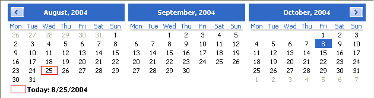
If a user selects a date or a range of dates in the calendar, you can use the GetSelectedDate or GetSelectedRange functions to obtain them. You use the SetSelectedDate and SetSelectedRange functions to select dates programmatically.
Users can navigate through the calendar using the arrow keys in the top corners. You can specify how many months should scroll for each click using the ScrollRate property. If users click on the name of the month in the title bar, a drop-down list displays, allowing them to navigate to another month in the same year. Clicking on the year in the title bar displays a spin control that lets users navigate quickly to a different year.
The DatePicker control provides an easy way for a user to select a single date. The user can choose to edit the date in the control or to select a date from a drop-down calendar. The calendar is similar to the MonthCalendar control, which can be used to select a range of dates. As an alternative to the drop-down calendar, you can set the ShowUpDown property to display up and down arrows that allow users to specify one element of the date at a time.
The drop-down calendar can only be used to select a date. The up and down arrows lets users specify a time as well as a date. The following illustration shows three DatePicker controls. The controls on the left have the ShowUpDown property set. One uses the standard date format, and the other uses a custom format that displays the date and time. The control on the right uses the default drop-down calendar option and the standard long date format.
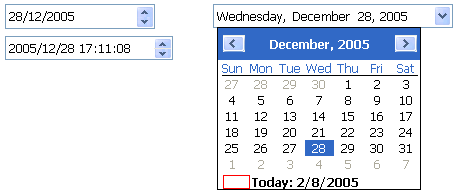
You can set initial properties for the appearance and behavior of the control in the Properties view. Properties that apply to the drop-down calendar portion of the control are similar to the properties that apply to the MonthCalendar control and display on the Calendar page in the Properties view. For example, you can choose which day of the week displays as the first day in the week, whether the current date is circled, and whether a "Today Section" showing the current date displays at the bottom of the calendar.
You can choose to display the date in the DatePicker control as a long date, a short date, a time, or with a custom format. To set a custom format in the painter, select dtfCustom! from the Format list and type the format in the Custom Format field. For example, the second control on the left in the previous illustration uses the custom format yyyy/MM/dd HH:mm:ss. The uppercase H for the hour format specifies a 24-hour clock. The following statements set the Format property to use a custom format and set the CustomFormat property to show the full name of the month, the day of the month followed by a comma, and the four-digit year:
dp_1.Format = dtfCustom!
dp_1.CustomFormat = "MMMM dd, yyyy"
For a complete list of formats you can use, see the description of the CustomFormat property in the online Help.
The MaxDate and MinDate properties determine the range of dates that a user can enter or pick in the control. If you set a restricted range, the calendar displays only the months in the range you set, and if users type a date outside the range into the control, the date reverts to its previous value.
When a user tabs into a DatePicker control, the control is in normal editing mode and behaves in much the same way as an EditMask control with a Date or DateTime mask. Users can edit the part of the date (year, month, day, hour, minutes, or seconds) that has focus using the up/down arrow keys on the keyboard or, for numeric fields, the number keys. Use the left/right arrow keys to move between parts of the date.If the control has a drop-down calendar, users can navigate from one month or year to another using the controls in the calendar and click to select a date. If the ShowUpDown option is set, users can change the selected part of the date or time with the up and down keys in the control. To navigate in the drop-down calendar, a user can:
You can give users a third way to change the date by setting the AllowEdit property to true. The user can then press F2 or click in the control to select all the text in the control for editing. When the control loses focus, the control returns to normal editing mode and the UserString event is fired. The UserString event lets you test whether the text the user entered in the control is a valid date and set the value to the new date if it is valid. If it is valid, you can use the event's dtm by reference argument to set the value to the new date. This code in the UserString event tests whether the date is valid and within range:
Date d
DateTime dt
IF IsDate(userstr) THEN
d = Date(usrstr)
IF (this.maxdate >= d and this.mindate <= d) THEN
dtm = DateTime(dt)
ELSE
MessageBox("Date is out of range", userstr)
END IF
ELSE
MessageBox("Date is invalid", userstr)
END IF
The Value property contains the date and time to which the control is set. If you do not specify a date, the Value property defaults to the current date and time. You can set the property in the painter or in a script. If you change the value at runtime, the display is updated automatically. The Value property has two parts that can be obtained from the DateValue and TimeValue properties. These properties should be used only to obtain the date and time parts of the Value property; they cannot be used to set a date or time. The Text property and the GetText function return the Value property as a string formatted according to your format property settings.
You can use the SetValue function to set the Value property in a control using separate date and time values or a single DateTime value. This example sets the property control using separate date and time values:
date dThis example sets the Value property using a DateTime value:
time td=date("2007/12/27")
t=time("12:00:00")dp_1.SetValue(d, t)
date d
time t
datetime dt
dt = DateTime(d, t)
dp_1.SetValue(dt)
The DatePicker control is designed to work in different locales. The string values in the DatePicker control support non-English charactersand the names of months and days of the week in the calendar display in the local language. You can set the FirstDayOfWeek property on the Calendar page in the Properties view to have the drop-down calendar use Monday or any other day of the week as the first day.
The MaxDate and MinDate properties and the date part of the Value property use the Short Date format specified in the regional settings in the Windows control panel of the local computer, and the time part uses the local computer's time format. The three predefined display formats—long date, short date, and time—also depend on the local computer's regional settings.
Animation controls can display Audio-Video Interleaved (AVI) clips. An AVI clip is a series of bitmap frames that can be played like a movie. The clip can come from an uncompressed AVI file or from an AVI file compressed using run-length encoding (BI_RLE8). If you use an AVI file that has a sound channel, the sound is not played.
You might display an AVI clip to show the user that some activity is occurring while a lengthy operation such as a search or full build is completing. To specify which AVI clip to use, specify the AVI file name in the control's AnimationName property. If you want the control to display only when an event in your application starts to play the application, set its Border and Visible properties to false and its Transparent property to true.
InkEdit and InkPicture provide the ability to capture ink input from users of Tablet PCs.
The InkEdit control captures and recognizes handwriting and optionally converts it to text. The InkPicture control captures signatures, drawings, and other annotations that do not need to be recognized as text. You can place a background image in an InkPicture control, and capture and save a user's annotations to the picture.
The ink controls are fully functional on Tablet PCs. On other computers, the InkEdit control behaves like a multiline edit control. If the Microsoft Tablet PC Software Development Kit (SDK) 1.7 is installed on the computer, InkPicture controls can accept ink input from the mouse.
The InkEdit control on a Tablet PC is like a MultiLineEdit control that has the added ability to accept ink input. On other PCs, the InkEdit control behaves as a normal MultiLineEdit control and cannot collect ink.
On a Tablet PC, the InkEdit control collects ink from a user in the form of handwriting and can handle single or multiple lines of text. It also recognizes gestures, which are specific pen strokes that represent a keyboard action such as backspace, space, or tab.The InkEdit control can convert ink to text, or leave it as handwriting.
The InkPicture control behaves like a Picture control that accepts annotation. The InkPicture control does not convert ink to text. You can associate a picture with the control so that the user can draw annotations on the picture, then save the ink, the picture, or both. If you want to use the control to capture and save signatures, you usually do not associate a picture with it.
You might use an InkPicture control to display an image of a process flow chart or a floor plan of a building, and capture suggested changes that users enter in the form of ink. Using an image of a garden, for example, a user could mark trees and shrubs to be removed and indicate where new plants should be added.
You can save the background image, the ink annotations, or both, to a file or to a blob.